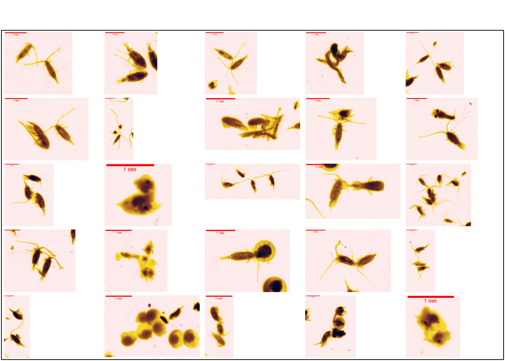
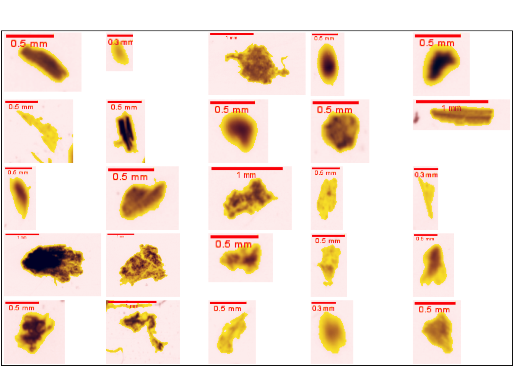
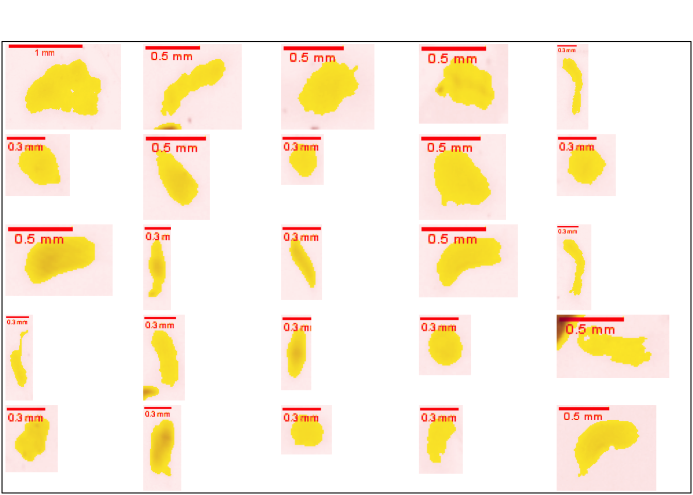
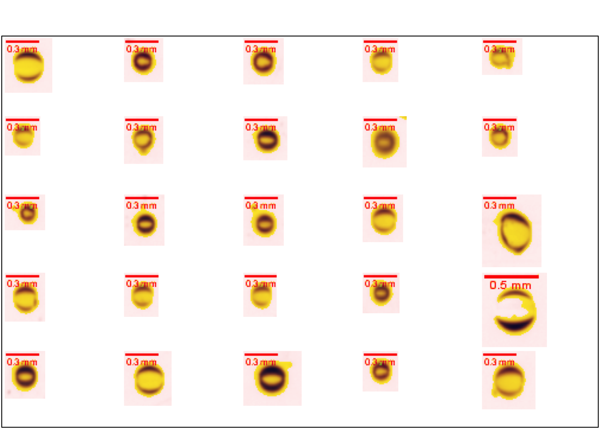

5 alter
Les classes citées ci-dessous représentent principalement des artéfacts et/ou des particules non planctoniques et ne sont pas considérées dans cette étude. Ces classes ont été créées pour éviter la contamination des classes planctoniques d’intérêt par ces particules (Fullgrabe, 2016). Le fait de ne pas inclure les objets multiples dans le dénombrement conduit donc à une très légère sous-estimation des comptages, sachant que les objets multiples ne représentent jamais plus que quelques pourcents de l’ensemble des particules, typiquement moins de 1 à 2 pourcent.
5.1 background noise
Cette classe représente les artéfacts liés à la présence de petites particules en arrière-plan.
dir <- stringr::str_subset(direction, "background noise")
plot_classification(dir)5.2 fibers and scratches
Cette classe correspond aux fibres retrouvées dans l’eau, ainsi que les possibles griffes sur les cellules en polystyrène utilisées pour contenir les échantillons scannés.
dir <- stringr::str_subset(direction, "fibers and scratches")
plot_classification(dir)5.3 multiple
Les éléments qui se chevauchent, de quelque nature qu’ils soient, se retrouvent classés ici. Lors du remplissage des cellules destinées au scanner, un des objectifs est d’obtenir une densité suffisante pour être représentative de l’échantillon, mais également pas trop importante pour réduire au maximum l’apparition d’objets multiples.
dir <- stringr::str_subset(direction, "multiple")
plot_classification(dir)
5.4 seston and badfocus
Le seston désigne les particules en suspension dans l’eau. Dans ce cas-ci, seules les particules non-planctoniques sont considérées. Les éléments se retrouvant hors du plan focal et étant trop flous que pour être identifiés sont également regroupés dans cette classe.
dir <- stringr::str_subset(direction, "seston and badfocus")
plot_classification(dir)
5.5 shadow patches
Des patchs de couleur uniforme peuvent apparaître sur le scan et sont intégrés dans cette classe.
dir <- stringr::str_subset(direction, "shadow patches")
plot_classification(path = dir)
5.6 single bubbles
Cette classe correspond aux bulles pouvant être présentes lors du scannage.
dir <- stringr::str_subset(direction, "single bubbles")
plot_classification(dir)